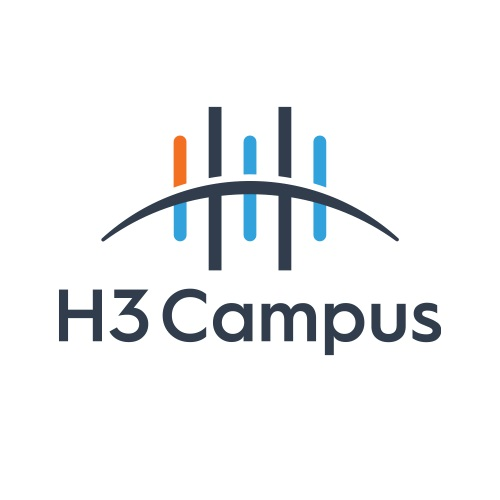
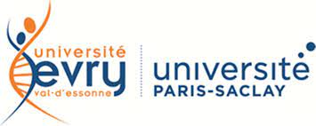

Année 2022-2024
école d'informatique en alternance H3Hitema,
88 Bd Gallieni,92130 Issy-les-Moulineaux
1ère année de BTS SIO Option SLAM

de janvier à février 2021-2022
Formation découverte des métiers du numérique ( Association Colombbus - Parcours Numérik'Up)

Année 2020-2021
Université Paris-Saclay,
Évry-Courcouronnes, France
1 ère année en licence de Physique-Chimie